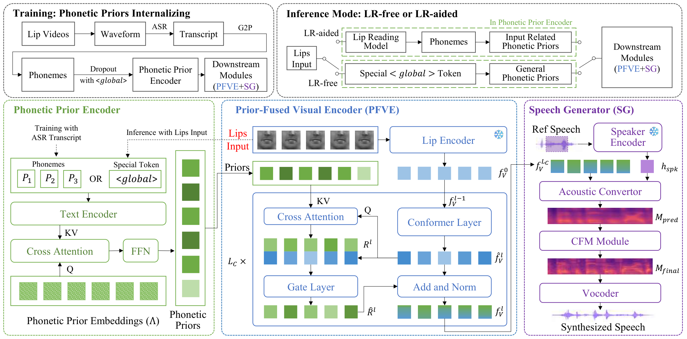

Overview
Abstract
Lip-to-speech (LTS) synthesis aims to generate intelligible speech from silent lip movements, but the ambiguous visual-to-phoneme mapping makes content-accurate synthesis challenging. Existing methods mainly follow two routes: (1) direct synthesis from lip movements and (2) synthesis dependent on an external lip-reading model. The former often suffers from content errors, while the latter improves content accuracy at the cost of computational overhead and error propagation. To address these limitations, we introduce FlexLTS, a unified paradigm for content-accurate LTS with optional lip reading. It generates accurate speech without requiring lip reading, while still benefiting from lip-reading text when available. FlexLTS learns phonetic prior embeddings from training transcripts and employs a visual-centric prior fusion mechanism to selectively incorporate relevant phonetic priors into the visual stream, yielding content-enriched semantic representations. Moreover, our proposed Progressive Textual Dropout strategy further promotes prior internalization by reducing reliance on explicit text during training. Experiments show that FlexLTS achieves state-of-the-art content accuracy and speech quality on the popular LRS2-BBC and LRS3-TED benchmarks and also performs well in cross-dataset zero-shot evaluation. Notably, without using any lip-reading model, FlexLTS surpasses existing lip-reading-aided methods in content accuracy.
Framework
Method Overview

Audio-visual comparisons
Demo Results
Select a sample and compare FlexLTS with prior methods. For the best experience, please use headphones.
Benchmark 01
LRS2
Comparison results on the LRS2-BBC benchmark.
Benchmark 02
LRS3
Comparison results on the LRS3-TED benchmark.
Zero-shot evaluation
Real World Videos
Cross-dataset examples with ground-truth and visual speech recognition text.